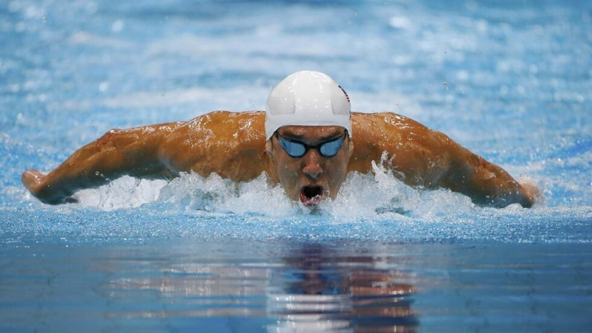
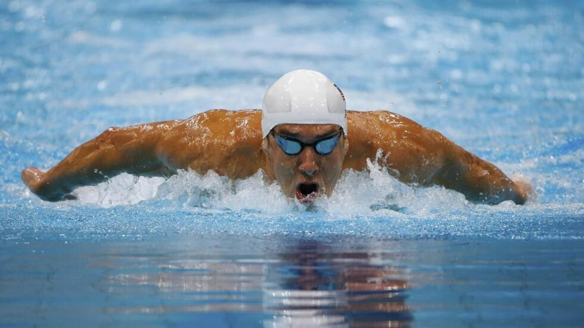

Habilidades y conocimientos: En el área personal soy de las personas que comen demasiado y nunca engordan, y en el área de mi carrera tengo bastante conocimientos en la rama de bases de datos y aplicaciones móviles.
Otros conocimientos: También otros conocimientos que poseo es la natación, y a parte de conocer ese deporte, me gusta la natación.